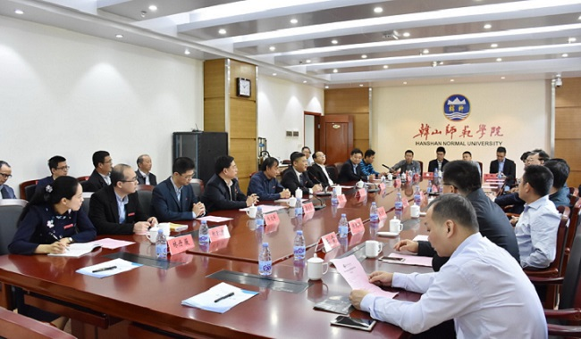
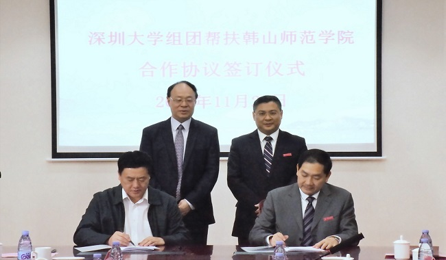
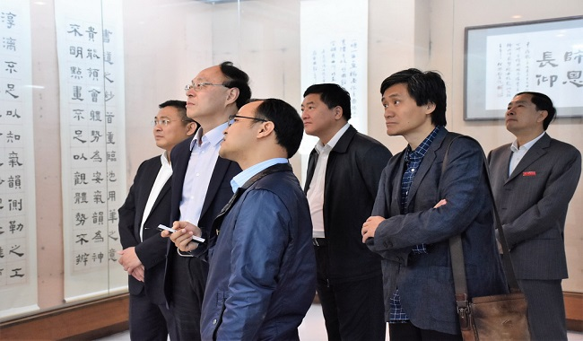
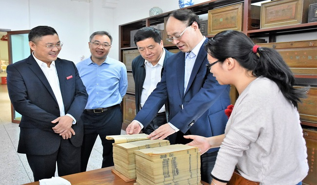

11月24日上午，深圳大学党委书记刘洪一、党委副书记范志刚等一行16人，来我校开展对接帮扶和调研工作。我校党委书记幸小涛，党委副书记、纪委书记林光英，副校长黄文勇及相关二级单位负责人与来宾在信息科技大楼608会议室座谈并举行帮扶签约仪式。林光英与范志刚分别代表双方签署帮扶协议。双方就贯彻落实省委、省政府推动区域协调发展，做到帮扶工作制度化、常态化、精准化、长效化等问题进行了热烈而深入的交流。
 幸小涛代表学校对刘洪一一行的到来表示了热烈欢迎，就深圳大学组团帮扶韩山师范学院对省委省政府以及深圳大学表示衷心的感谢。幸小涛介绍了我校发展历程、办学成果以及未来规划，他指出，我校十几年来不断发展进步的同时，也存在着办学层次还不高、学科建设水平较低、师资力量薄弱、办学条件亟待改善等制约学校发展的问题，迫切希望得到上级部门和高水平大学的支持和帮助。幸小涛表示，省委、省政府安排深圳大学组团帮扶韩山师范学院，为我们学校谋求发展进步提供了千载难逢的历史好机遇，全体韩师人倍感温暖、信心百倍，定当珍惜这难得的历史好机遇，学习深圳大学好的经验和做法，精准发力，真抓实干，着力解决学科建设、师资队伍建设和体制机制等问题，实现学校教育事业的跨越式发展。
刘洪一表示，深圳大学组团帮扶韩山师范学院，是广东省委省政府落实习近平总书记视察广东重要讲话精神中提高发展平衡性和协调性的要求，破解广东高等教育发展不平衡不充分的具体举措，是一项光荣的政治任务，深圳大学作为特区大学责无旁贷，一定落实好省委省政府的要求，举全校之力帮助韩山师范学院实现教育事业的大发展。同时，深圳大学也要借助组团帮扶契机和韩师相互学习，密切两校的交流合作，携手共进，实现共同发展。刘洪一要求深圳大学帮扶团认真接受工作安排和要求，学习韩师严谨的校风师风的同时，把特区大学的奋斗精神和开创精神带到韩师。建议两校组建双组长制的联席会议制度与协商机制，进行高层次对接，携两校全校力量解决韩师亟待解决的问题。建议用阶段式、项目化等非常驻的方式，精准、灵活、高效、科学地建立多方共建合作关系，实现共赢。
 签约仪式后，两校相关部门和二级学院进行了详细的对接交流。在我校领导的陪同下，刘洪一一行还分别参观了饶宗颐学术馆、图书馆古籍典藏室、陈其铨书道馆、陈复礼摄影艺术馆、林进华荣勋馆等处。
党委办公室、学校办公室、党委组织部、党委宣传部、党委统战部、财务处、教务处以及部分二级学院的负责人参加了活动。（摄影：胡文昭、廖欢）